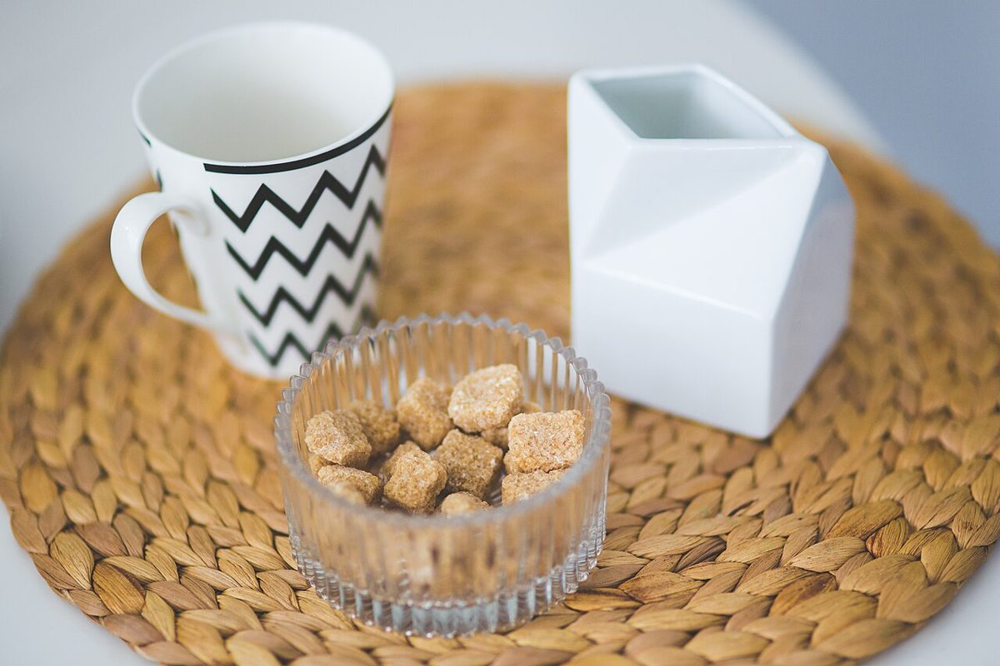
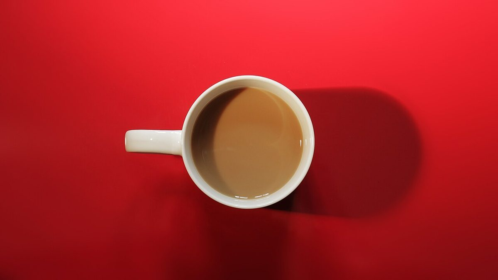

VOICE
口コミ(イメージ例)
以下は制作側が考えた創作の文章で、実在のお客様の投稿ではありません。
想像した声
こんな声があったら
イメージ例
お店の情報は準備中とのこと。公開されたら、Instagramをのぞいてみたいです。
イメージ例
写真を眺めているだけでも、行ってみたくなりそうです。
イメージ例
営業日や時間が分かったら、ぜひ訪ねてみたいです。
制作側の創作です。実在のお客様の投稿ではありません。
ギャラリー(イメージ)
写真のイメージ




写真はフリー素材のイメージです。お店のものではありません。